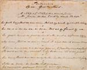
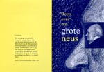
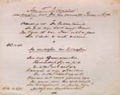
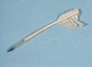

Beets 1903 - 2003
Tentoonstelling van 13 maart tot 11 mei 2003 in de Universiteitsbibliotheek
Samenstelling: C.J. Stiekema en A.Th. Bouwman
Tentoongestelde stukken
Nicolaas Beets was een veelschrijver. Zijn poëzie (vooral de puntdichten en hekeldichten) was vaak geïnspireerd door de actualiteit of door gebeurtenissen in eigen kring. De onderwerpen variëren van de retorische overkill van passiepredikers tot Meer Uitgebreid Lager Onderwijs (MULO), en van valse tanden tot de Boerenoorlog in Zuid-Afrika. De verzen konden serieus zijn, maar ook vol humor. Niet altijd waren ze bedoeld om uitgegeven te worden, ze dienden bijvoorbeeld ook als cadeau, of om te verkopen bij een liefdadigheidsactie.
|  | 9.1. Misschien met zijn eigen geprononceerde neus in gedachten schreef Beets zijn ‘Fantasieën op een grooten neus’ (1889). Ook dit gedicht is in druk gegeven en verspreid ter gelegenheid van Beets’ honderdste sterfdag en de boekenweek 2003. [LTK BEETS D 15] |
|  | |
|  | 9.2. De heer Th. Weevers schonk Beets ieder jaar een bos verenpennen en een fles inkt. Uit dank schreef de dichter een vers voor hem (1864). [LTK BEETS D 1] |
|  | 9.3. Beets schreef bij voorkeur met een ganzenveer. Dit exemplaar, wellicht versneden door ‘Meester’ Wevers, is bewaard gebleven. Met bijbehorend etui. [LTK BEETS B 27] |
| vorige pagina | volgende pagina |